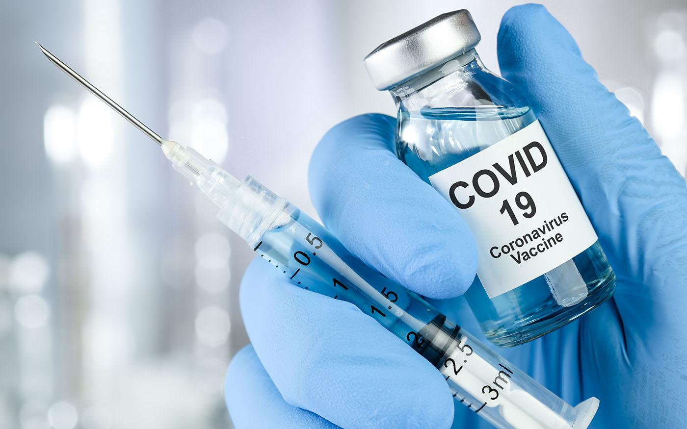
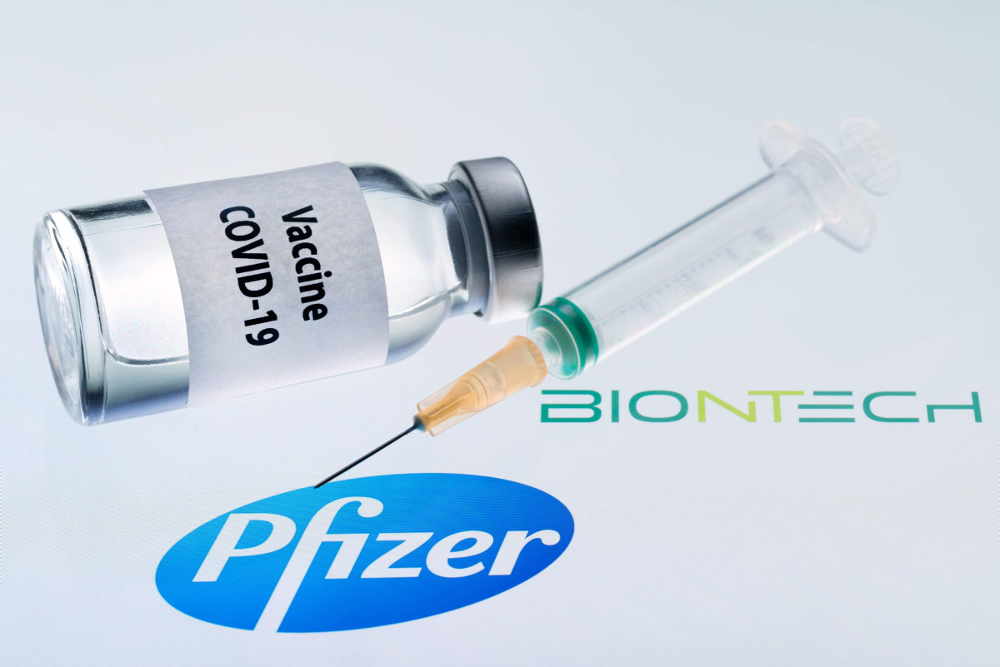
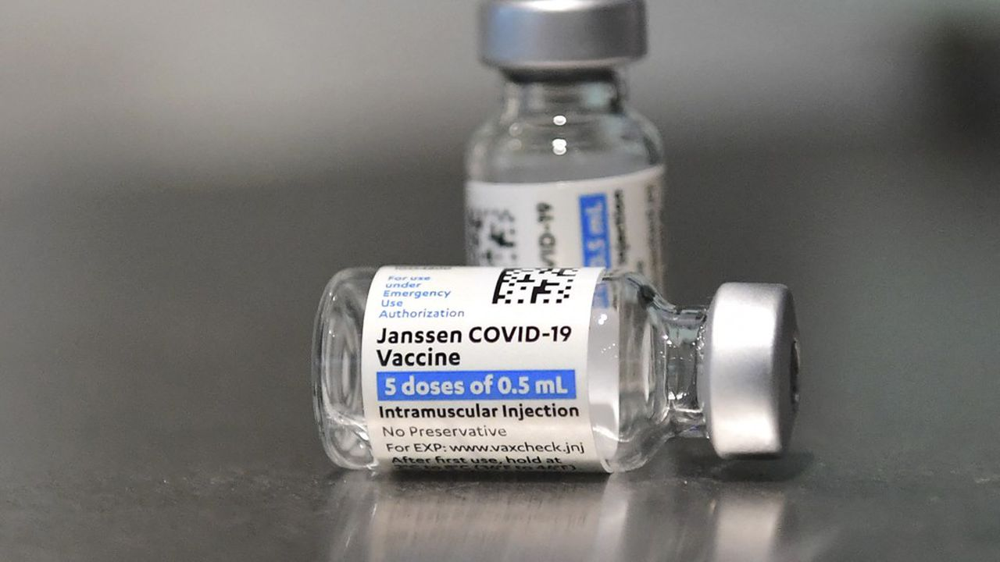

COVID-19

Définition de virus
COVID-19est l'acronyme pour "coronavirus disease 2019".
C'est une maladie infectieuse causée par un nouveau coronavirus appelé SARS-CoV-2.
Elle a été découverte pour la première fois en décembre 2019 en Chine et s'est rapidement propagée à d'autres parties du monde, entraînant une pandémie mondiale.
Les symptômes de COVID-19 incluent de la fièvre, la toux, la fatigue, la perte de goût et d'odorat, et dans les cas graves, une détresse respiratoire et une insuffisance d'organes.
La maladie est transmise par voie aérienne et peut être prévenue en pratiquant une bonne hygiène personnelle, comme le lavage fréquent des mains et le port d'un masque.
les règles de préventions et précautions
Les règles de prévention et de précautions pour prévenir la transmission du COVID-19 comprennent :
- Se laver fréquemment les mains avec de l'eau et du savon pendant au moins 20 secondes.
- Utiliser un désinfectant pour les mains lorsqu'il n'est pas possible de se laver les mains.
- Éviter de se toucher le visage, en particulier le nez et la bouche.
- Tousser ou éternuer dans un mouchoir ou dans le pli du coude.
- Porter un masque facial dans les lieux publics fermés et dans les situations où il est difficile de maintenir une distance physique de 2 mètres.
- Maintenir une distance physique de 2 mètres avec les autres personnes.
- Éviter les rassemblements de masse
- Éviter les voyages non essentiels
- Surveiller ses symptômes et rester à la maison si on se sent malade.
- Se faire tester et suivre les conseils des autorités de santé publique.
Il est important de suivre ces règles de prévention et de précautions pour aider à prévenir la transmission du COVID-19 et à protéger soi-même ainsi que les autres.
les vaccins du COVID
Il existe plusieurs vaccins COVID disponibles à ce jour pour prévenir l'infection par le virus SARS-CoV-2, qui cause la maladie COVID-19. Les vaccins COVID approuvés comprennent :

- Pfizer-BioNTech : Ce vaccin est un ARNm (acide ribonucléique messager) qui utilise une portion du génome du virus pour stimuler la production d'anticorps contre le virus.
- Moderna : Ce vaccin est également un ARNm qui utilise une portion du génome du virus pour stimuler la production d'anticorps.
- AstraZeneca-Oxford : Ce vaccin est un vecteur viral basé sur une version modifiée du virus de la fièvre chimpanzé qui ne peut plus causer la maladie. Il transporte une portion du génome du virus COVID-19 pour stimuler la production d'anticorps.

- Johnson & Johnson : Ce vaccin est un vecteur viral basé sur un adénovirus modifié qui ne peut plus causer la maladie. Il transporte une portion du génome du virus COVID-19 pour stimuler la production d'anticorps.
- Sinopharm : Ce vaccin est un vaccin à virus inactivé qui utilise des particules virales inactivées pour stimuler la production d'anticorps contre le virus.
- Sinovac : Ce vaccin est également un vaccin à virus inactivé qui utilise des particules virales inactivées pour stimuler la production d'anticorps contre le virus.
Il est important de se faire vacciner selon les conseils des autorités sanitaires locales et de suivre les protocoles de vaccination recommandés pour maximiser l'efficacité et la sécurité du vaccin. Il est également important de continuer à suivre les règles de prévention et de précautions, même après avoir été vacciné, pour aider à prévenir la transmission du virus.